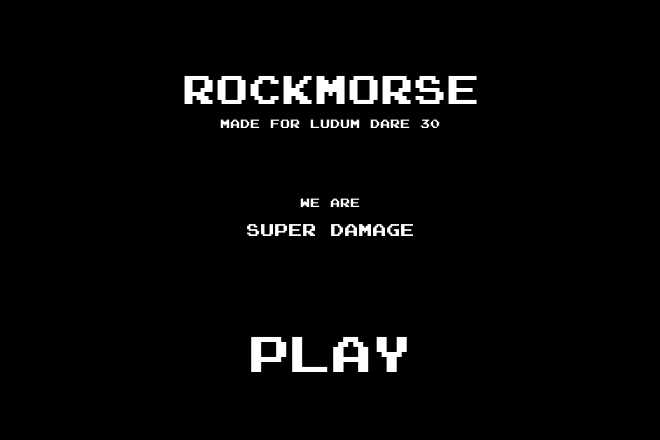
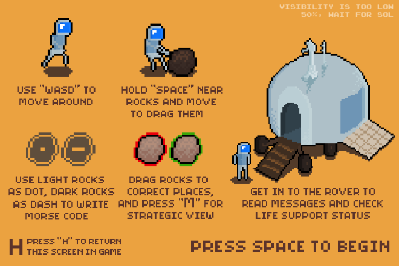
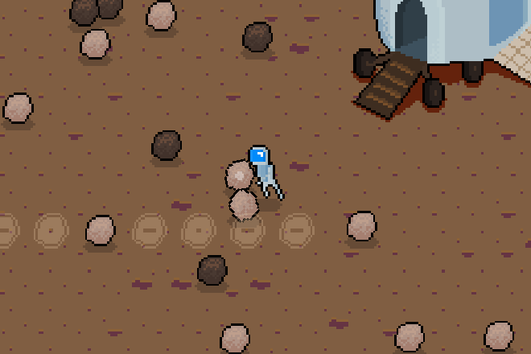
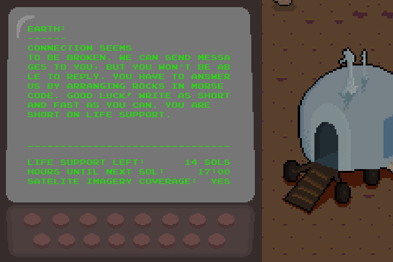
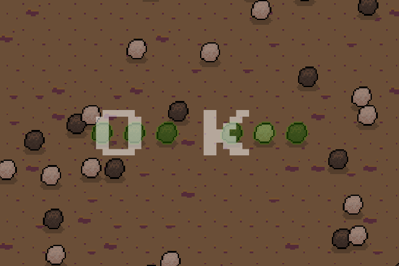

About
You are an astronaut stranded on Mars. Your radio still hears Earth, but Earth cannot hear you. Each sol, a Mars day, Earth sends a message to the screen in your rover.
You answer by dragging rocks into Morse code. Dark rocks are dashes and light rocks are dots. Earth can only read your answer in daylight, when its satellite can see you.
Life support lasts 14 sols. Answer every message before it runs out, and a lander comes to take you home.
This is the post-compo version, the last state of the game's source, from December 2016.
Aim of the game
Answer each of Earth's messages in Morse code, then walk into the lander when it arrives.
How to play
- Read the help screen, then press Space to start.
- Walk into the rover to read Earth's message on its screen. The screen also shows how much life support is left.
- Find the answer's slots on the ground near the rover. Hold M to see the whole answer from above.
- Hold Space near a rock to pull it, and drag it onto a slot of its kind. A slot turns green when its rock is right.
- Wait for daylight. Earth reads your answer, and a new message arrives at the rover.
- Rocks that touch the rover break, and new ones appear somewhere else.
- Time stops while you sit in the rover, so read the messages there.
Controls
On a touch screen, the buttons under the game stand in for these keys. Pull is Space, Map is M and Help is H. Hold Pull and Map, as you would the keys. A tap on the game works as a click.
- ← ↑ ↓ → or W A S D
- Walk
- Space
- Hold to pull the nearest rock. Also closes a message and goes on from the story screens.
- M or Tab
- Hold to see the whole answer from above
- H or Shift
- Show or hide the help. Esc and P work too.
- Enter or a click
- Start from the title, and go on from the story and end screens
A gamepad works too. The D-pad or left stick walks. The bottom face button (A on Xbox, cross on PlayStation) is Space. The left shoulder button is M, and Start is H. In a browser, press a gamepad button once so the page sees the gamepad.
Screenshots





History
Super Damage made Rockmorse for Ludum Dare 30 in August 2014. The theme was "Connected Worlds". Super Damage was Eren Ozel and Eralp Karaduman.
It was made in Unity, and work went on after the jam. The post-compo fixes stop time in the rover and fix a bug that kept you from leaving it. The source is on GitHub at superdamage/LD30. This port follows its last commit, 19ad7cb, from December 2016. The builds made then used Unity 5.4.
How it was ported
The Unity project and its 2016 builds survived. In October 2026 the game was rebuilt in C with raylib and Box2D.
The scenes, prefabs and settings were read out of the Unity project into plain data files. Every number the game uses comes from those files. The C# scripts were rewritten by hand in plain C, with readable names. Their original comments are kept, word for word.
The 2016 web and Mac builds still run, and served as references. The port's movement, rock physics, timing, text layout and 3D sound were measured against them.
The port uses raylib 6.0 for drawing, input and sound, and Box2D 3.1 for physics. The web version is compiled to WebAssembly with Emscripten. The same code also builds for macOS, Windows and Linux.
The port was written with Claude Code, Anthropic's coding agent, running the Claude Opus 5.5 model.
Changes from the original
The port plays like the 2016 build, original bugs included. A few things changed on purpose.
- The help keys froze the game when pressed during the short overview after Earth reads an answer. The port ignores them there.
- The original cheat needed Shift and C pressed in the very same frame. The port uses "hold Ctrl, press C". It fills the current answer's slots with the right rocks.
- New keys sit next to the old ones: Enter, Tab and Shift, plus the gamepad and touch controls. Every original key still works.
- The title screen had no key for Play. Space and Enter now start the game.
- The Unity splash screen is left out, as it is not part of the game.
- The original had reverb inside the rover and the lander. The 2016 web build never played it, so the port leaves it out.
More information
| Made | August 2014, last build December 2016 |
|---|---|
| Event | Ludum Dare 30, theme "Connected Worlds" |
| Made by | Super Damage: Eren Ozel and Eralp Karaduman |
| Original | Unity, C#. Source at commit 19ad7cb |
| Port | C17, raylib 6.0, Box2D 3.1, WebAssembly |
| Genre | Puzzle, exploration |
| Controls | Keyboard and mouse, gamepad, or touch on phones and tablets |
| Source | github.com/eralpkaraduman/rockmorse |